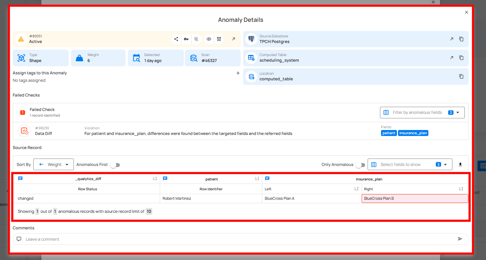

Data Diff
Recommended Check
Qualytics recommends using the dataDiff rule type instead of the isReplicaOf.
The isReplicaOf check is being deprecated and will no longer be maintained, while dataDiff provides the same functionality with enhanced performance and additional capabilities.
What is Data Diff?
Think of Data Diff as a "spot the difference" game for your business data.
Just like when you compare two pictures side-by-side to find what's changed, Data Diff compares two sets of information to make sure they match perfectly. It's like having a super-careful assistant who checks that when you copy something important, nothing gets lost, changed, or added by mistake.
Add Data Diff Check
Use the Data Diff Check to compare two tables, detect anomalies, and run a scan to identify mismatched or missing records for accurate data validation.
What Does Data Diff Do?
Data Diff helps you answer questions like:
- "Did all my customer orders copy correctly to the backup system?"
- "Is the sales report showing the same numbers as the original database?"
- "When we moved data from System A to System B, did everything transfer properly?"
In simple terms: It makes sure Data Set A is an exact match of Data Set B.
How Does Data Diff Work?
Let's break it down into simple steps:
Step 1: Choose What to Compare
You pick two sets of data:
- The Original (your main source of truth)
- The Copy (backup, report, or transferred data)
Step 2: Pick What Matters
You decide which information is important to check. For example:
- Customer names
- Order amounts
- Product IDs
- Dates
Step 3: The Comparison Happens
Data Diff automatically looks at both sets:
- Is everything from the original in the copy?
- Is there anything extra in the copy that shouldn't be there?
- Do all the values match exactly?
Step 4: Get Your Results
The Data Diff report shows:
- Pass – Target and reference datasets match; no action needed.
- Anomalies Found – Differences detected; view the report to see which rows or fields differ.
Why Should You Use Data Diff?
1. Catch Mistakes Before They Cause Problems
Imagine your finance team creates a quarterly report from last night's data backup. If some transactions didn't copy over, your report would be wrong. Data Diff catches this immediately.
2. Save Time and Reduce Stress
Instead of manually checking thousands of rows in spreadsheets, Data Diff does it automatically in seconds.
3. Build Trust in Your Data
When you present numbers to leadership or clients, you can confidently say, "This data has been verified."
4. Protect Your Business
Wrong data can lead to:
- Incorrect invoices
- Bad business decisions
- Compliance issues
- Customer complaints
Data Diff acts as your safety net.
Real-Life Example: Online Retail Store
Let me walk you through a complete, real-world scenario:
The Situation
Sunshine Electronics is an online store that sells gadgets. Every night at midnight, their system creates a backup copy of all the day's orders. This backup is used for:
- Creating daily sales reports
- Feeding data to their accounting system
- Analyzing customer trends
The Problem They Had
One morning, the Sales Manager noticed the daily report showed 1,247 orders, but the warehouse had shipped 1,250 packages. Where did 3 orders go?
After investigating, they discovered:
- The backup system had a glitch
- Some orders placed between 11:58 PM and midnight weren't copied over
- This had been happening for weeks
- They had been under-reporting revenue and had incorrect inventory counts
The Solution: Data Diff
They set up Data Diff to automatically compare their main orders database with the backup every morning.
Here's what they compared:
Original Orders Database:
| Order ID | Customer Name | Product | Amount | Date |
|---|---|---|---|---|
| 10001 | Sarah Johnson | Laptop | $899 | Jan 15, 2025 |
| 10002 | Mike Chen | Headphones | $149 | Jan 15, 2025 |
| 10003 | Emily Davis | Tablet | $399 | Jan 15, 2025 |
| ... | ... | ... | ... | ... |
| 10248 | David Lee | Phone Case | $19 | Jan 15, 2025 |
| 10249 | Anna Brown | USB Cable | $12 | Jan 15, 2025 |
| 10250 | Tom Wilson | Mouse | $29 | Jan 15, 2025 |
Backup Orders Database:
| Order ID | Customer Name | Product | Amount | Date |
|---|---|---|---|---|
| 10001 | Sarah Johnson | Laptop | $899 | Jan 15, 2025 |
| 10002 | Mike Chen | Headphones | $149 | Jan 15, 2025 |
| 10003 | Emily Davis | Tablet | $399 | Jan 15, 2025 |
| ... | ... | ... | ... | ... |
| 10248 | Missing | Missing | Missing | Missing |
| 10249 | Missing | Missing | Missing | Missing |
| 10250 | Missing | Missing | Missing | Missing |
What Data Diff Discovered
ALERT GENERATED:
DIFFERENCE DETECTED!
- Fields Affected: amount, order_id, product, order_date, customer_name
- Rule Applied: Data Diff
- Anomalous Records: 3
Technical Output (from Qualytics):
After running the Data Diff check, the system identified mismatched records between the Original Orders Database (Left) and the Backup Orders Database (Right).
| Row Status | order_id | amount (Left → Right) | order_date (Left → Right) | customer_name (Left → Right) | product (Left → Right) |
|---|---|---|---|---|---|
| removed | 10248 | 19.00 → missing | 2025-01-15 → missing | David Lee → missing | Phone Case → missing |
| removed | 10249 | 12.00 → missing | 2025-01-15 → missing | Anna Brown → missing | USB Cable → missing |
| removed | 10250 | 29.00 → missing | 2025-01-15 → missing | Tom Wilson → missing | Mouse → missing |

🔍 Summary
- These three records exist in the Original Orders Database but are missing from the Backup Orders Database.
- The “removed” status means Data Diff detected entries that weren’t found in the reference (right) table.
- This confirms that some orders failed to copy during the backup process.
The Outcome
Immediate Benefits:
- They fixed the backup system timing issue
- They recovered the missing orders data
- They corrected their sales reports
Long-term Benefits:
- Now they get an automatic email every morning confirming data matches
- If there's ever a mismatch, they know within hours instead of weeks
- They prevented thousands of dollars in unreported revenue
- Their inventory tracking became accurate again
Another Quick Example: Healthcare Clinic
City Health Clinic transfers patient appointment data from their scheduling system to their billing system every hour.
They use Data Diff to check:
- Patient Name
- Appointment Date
- Doctor Assigned
- Service Type
- Insurance Information
📋 Before Correction (Data Diff Caught This)
| Field | Scheduling System | Billing System |
|---|---|---|
| Patient | Robert Martinez | Robert Martinez |
| Doctor | Dr. Smith | Dr. Smith |
| Insurance Plan | BlueCross Plan A | BlueCross Plan B |
The Insurance Plan code changed during transfer. Without Data Diff, the clinic would have billed the wrong insurer.
✅ After Correction (Fixed Data)
| Field | Scheduling System | Billing System |
|---|---|---|
| Patient | Robert Martinez | Robert Martinez |
| Doctor | Dr. Smith | Dr. Smith |
| Insurance Plan | BlueCross Plan A | BlueCross Plan A |
Info
Data Diff caught the mismatch and the billing team corrected it before submitting the claim — avoiding claim rejection, payment delays, and extra work.
🧩 Anomalies Detected – Output Table
The Data Diff check found a mismatch between the scheduling_system and billing_system datasets for one record.
The issue was detected in the insurance_plan field for the patient Robert Martinez.
| Row Status | Patient | Field | Left (Scheduling System) | Right (Billing System) |
|---|---|---|---|---|
| Changed | Robert Martinez | insurance_plan | BlueCross Plan A | BlueCross Plan B |

Key Takeaways
Data Diff is like having a careful proofreader who checks that when you copy important information, nothing goes wrong.
It works automatically- you set it up once, and it keeps watching your data 24/7.
It catches problems early- before they affect your reports, decisions, or customers.
It gives you peace of mind- you can trust that your backup, reports, and transferred data are accurate.
When Should You Use Data Diff?
Use Data Diff whenever you:
- Copy data from one place to another
- Create backups of important information
- Generate reports from multiple sources
- Transfer data between different systems
- Move data to the cloud
- Export data to partners or vendors
Field Scope
Multi: The rule evaluates multiple specified fields.
Accepted Types
| Type | |
|---|---|
Date |
|
Timestamp |
|
Integral |
|
Fractional |
|
String |
|
Boolean |
General Properties
| Name | Supported |
|---|---|
Filter Allows the targeting of specific data based on conditions |
|
Coverage Customization Allows adjusting the percentage of records that must meet the rule's conditions |
The filter allows you to define a subset of data upon which the rule will operate.
It requires a valid Spark SQL expression that determines the criteria rows in the DataFrame should meet. This means the expression specifies which rows the DataFrame should include based on those criteria. Since it's applied directly to the Spark DataFrame, traditional SQL constructs like WHERE clauses are not supported.
Examples
Direct Conditions
Simply specify the condition you want to be met.
Combining Conditions
Combine multiple conditions using logical operators like AND and OR.
Correct usage" collapsible="true
Incorrect usage" collapsible="true
Utilizing Functions
Leverage Spark SQL functions to refine and enhance your conditions.
Correct usage" collapsible="true
Incorrect usage" collapsible="true
Using scan-time variables
To refer to the current dataframe being analyzed, use the reserved dynamic variable {{ _qualytics_self }}.
Correct usage" collapsible="true
Incorrect usage" collapsible="true
While subqueries can be useful, their application within filters in our context has limitations. For example, directly referencing other containers or the broader target container in such subqueries is not supported. Attempting to do so will result in an error.
Important Note on {{ _qualytics_self }}
The {{ _qualytics_self }} keyword refers to the dataframe that's currently under examination. In the context of a full scan, this variable represents the entire target container. However, during incremental scans, it only reflects a subset of the target container, capturing just the incremental data. It's crucial to recognize that in such scenarios, using {{ _qualytics_self }} may not encompass all entries from the target container.
Specific Properties
Specify the datastore and table/file where the reference data for the targeted fields is located for comparison.
| Name | Description |
|---|---|
Row Identifiers |
The list of fields defining the compound key to identify rows in the comparison analysis. |
Datastore |
The source datastore where the reference data for the targeted field(s) is located. |
Table/file |
The table, view or file in the source datastore that should serve as the reference for comparison. |
Comparators |
Specifies how variations are handled, allowing for slight deviations within a defined margin of error. |
Info
The DataDiff rule supports editing of Row Identifiers and Passthrough Fields, allowing for more tailored configuration.
Details
Row Identifiers
This optional input allows row comparison analysis by defining a list of fields as row identifiers, it enables a more detailed comparison between tables/files, where each row compound key is used to identify its presence or absence in the reference table/file compared to the target table/file. Qualytics can inform if the row exists or not and distinguish which field values differ in each row present in the reference table/file, helping to determine if it is a data diff.
Info
Anomalies produced by a DataDiff quality check making use of Row Identifiers have their source records presented in a different visualization.
See more at: Comparison Source Records
Comparators
The Comparators allow you to set margins of error, accommodating slight variations in data validation. This flexibility is crucial for maintaining data integrity, especially when working with different data types such as numeric values, durations, and strings. Here's an overview of how each type of comparator can be beneficial for you:
Numeric
Numeric comparators enable you to compare numbers with a specified margin, which can be a fixed absolute value or a percentage. This allows for minor numerical differences that are often acceptable in real-world data.
Comparison Type
- Absolute Value: Uses a fixed threshold for determining equality. It's ideal when you need consistent precision across measurements.
- Percentage Value: Uses a percentage of the original value as the threshold for equality comparisons. It's suitable for floating point numbers where precision varies.
Threshold
The threshold is the value you set to define the margin of error:
- When using Absolute Value, the threshold represents the maximum allowable difference between two values for them to be considered equal.
- For Percentage Value, the threshold is the percentage that describes how much a value can deviate from a reference value and still be considered equal.
Illustration using Absolute Value
In this example, it compares Value A and Value B according to the defined Threshold of 50.
| Value A | Value B | Difference | Are equal? |
|---|---|---|---|
| 100 | 150 | 50 | True |
| 100 | 90 | 10 | True |
| 100 | 155 | 55 | False |
| 100 | 49 | 51 | False |
Illustration using Percentage Value
In this example, it compares Value A and Value B according to the defined Threshold of 10%.
Percentage Change Formula: [ (Value B - Value A) / Value A ] * 100
| Value A | Value B | Percentage Change | Are equal? |
|---|---|---|---|
| 120 | 132 | 10% | True |
| 150 | 135 | 10% | True |
| 200 | 180 | 10% | True |
| 160 | 150 | 6.25% | True |
| 180 | 200 | 11.11% | False |
Duration
Duration comparators support time-based comparisons, allowing for flexibility in how duration differences are managed. This flexibility is crucial for datasets where time measurements are essential but can vary slightly.
Unit
The unit of time you select determines how granular the comparison is:
- Millis: Measures time in milliseconds, ideal for high-precision needs.
- Seconds: Suitable for most general purposes where precision is important but doesn't need to be to the millisecond.
- Days: Best for longer durations.
Value
Value sets the maximum acceptable difference in time to consider two values as equal. It serves to define the margin of error, accommodating small discrepancies that naturally occur over time.
Illustration using Duration Comparator
| Unit | Value A | Value B | Difference | Threshold | Are equal? |
|---|---|---|---|---|---|
| Millis | 500 ms | 520 ms | 20 ms | 25 ms | True |
| Seconds | 30 sec | 31 sec | 1 sec | 2 sec | True |
| Days | 5 days | 7 days | 2 days | 1 day | False |
| Millis | 1000 ms | 1040 ms | 40 ms | 25 ms | False |
| Seconds | 45 sec | 48 sec | 3 sec | 2 sec | False |
String
String comparators facilitate comparisons of textual data by allowing variations in spacing. This capability is essential for ensuring data consistency, particularly where minor text inconsistencies may occur.
Ignore Whitespace
When enabled, this setting allows the comparator to ignore differences in whitespace. This means sequences of whitespace are collapsed into a single space, and any leading or trailing spaces are removed. This can be particularly useful in environments where data entry may vary in formatting but where those differences are not relevant to the data's integrity.
Illustration
In this example, it compares Value A and Value B according to the defined string comparison to ignore whitespace as True.
| Value A | Value B | Are equal? | Has whitespace? |
|---|---|---|---|
Leonidas |
Leonidas |
True | No |
Beth |
Beth |
True | Yes |
Ana |
Anna |
False |
Yes |
Joe |
Joel |
False |
No |
Anomaly Types
| Type | Supported |
|---|---|
Record Flag inconsistencies at the row level |
|
Shape Flag inconsistencies in the overall patterns and distributions of a field |
Example
Scenario: Consider that the fields N_NATIONKEY and N_NATIONNAME in the NATION table need to be compared with a backup database for data validation purposes. The data engineering team wants to ensure that both fields in the backup accurately match the original.
Objective: Ensure that N_NATIONKEY and N_NATIONNAME from the NATION table match the data in the NATION_BACKUP table.
Sample Data from NATION
| N_NATIONKEY | N_NATIONNAME |
|---|---|
| 1 | Australia |
| 2 | United States |
| 3 | Uruguay |
Reference Sample Data from NATION_BACKUP
| N_NATIONKEY | N_NATIONNAME |
|---|---|
| 1 | Australia |
| 2 | USA |
| 3 | Uruguay |
{
"description": "Ensure that N_NATIONKEY and N_NATIONNAME from the NATION table match the data in the NATION_BACKUP table",
"coverage": 1,
"properties": {
"ref_container_id": {ref_container_id},
"ref_datastore_id": {ref_datastore_id}
},
"tags": [],
"fields": ["N_NATIONKEY", "N_NATIONNAME"],
"additional_metadata": {"key 1": "value 1", "key 2": "value 2"},
"rule": "dataDiff",
"container_id": {container_id},
"template_id": {template_id},
"filter": "1=1"
}
Anomaly Explanation
The datasets representing the fields N_NATIONKEY and N_NATIONNAME in the original and the reference data are not completely identical, indicating a possible discrepancy in the data or an unintended change.
graph TD
A[Start] --> B[Retrieve Original Data]
B --> C[Retrieve Reference Data]
C --> D{Do datasets match for both fields?}
D -->|Yes| E[End]
D -->|No| F[Mark as Anomalous]
F --> E-- An illustrative SQL query comparing original to reference data for both fields.
select
orig.n_nationkey as original_key,
orig.n_nationname as original_name,
ref.n_nationkey as reference_key,
ref.n_nationname as reference_name
from nation as orig
left join nation_backup as ref on orig.n_nationkey = ref.n_nationkey
where
orig.n_nationname <> ref.n_nationname
or
orig.n_nationkey <> ref.n_nationkey
Potential Violation Messages
Shape Anomaly
There is 1 record that differs between NATION_BACKUP (3 records) and NATION (3 records) in <datastore_name>